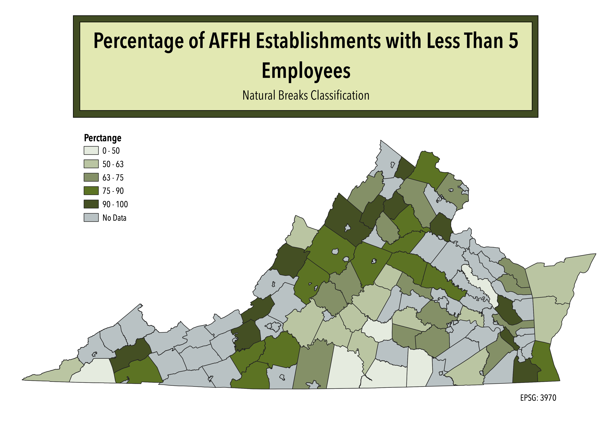
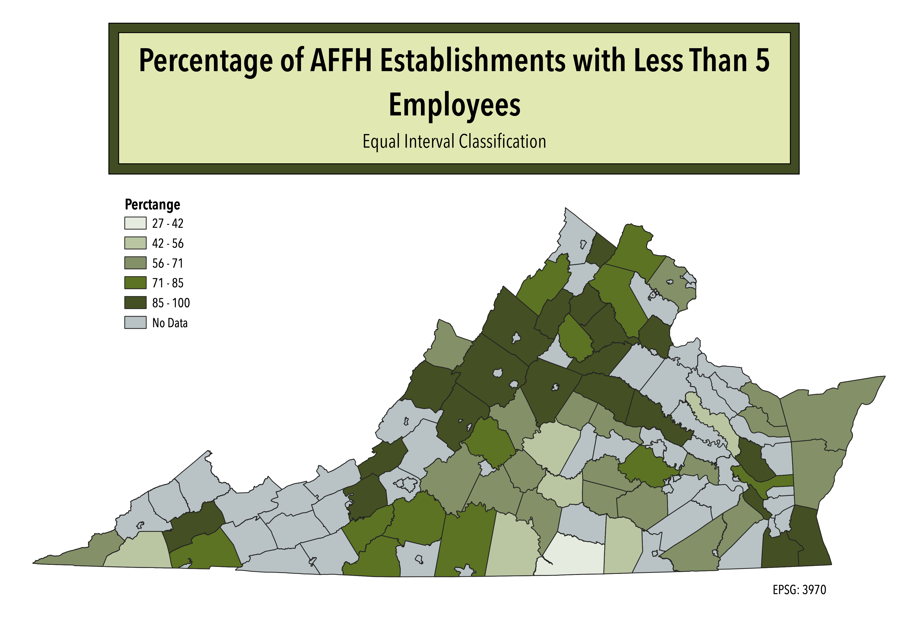
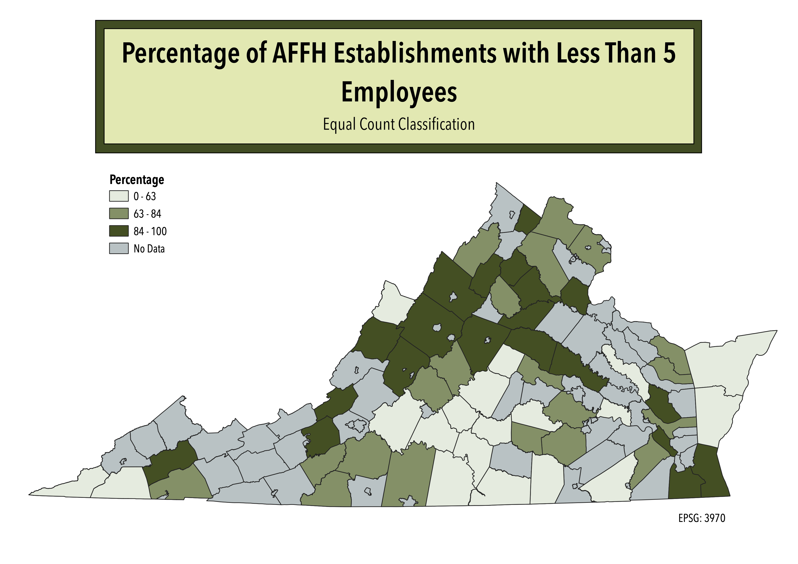

Homework 6 Part 2: Ratios and Classifications
My Ratio:
I did a ratio between the total number of Agriculture, Forestry Fishing, and Hunting (AFFH) establishments and those with less than 5 employees. The percentag distribution emphasizes that most of the counties consist of AFFH establishments that rely on less than 5 employees. There are only four counties where more than 50% of the AFFH establishments have 5 or more employees.
Natural Breaks Classification
This classification has a large interval for the first category, which does not represent the nuance of the percentages between those counties. In contrast, the smaller intervals for the rest of the categories, and the large number of counties within them, emphasize how similar the percentage of establishments with less than 5 employees is across counties.

Equal Interval Classification
In order to make equal intervals, the categories excluded unnecessary values (like less than 27%), which allows for a clearer representation of the data. Compared to the other classifications, this one appears to be the best representation of the clusters of data. It emphasizes how few counties have a greater percentage of establishments with more than 5 employees.

Equal Count Classification
For this classification, the way the data was clustered did not allow for more categories with smaller intervals. This caused the first category to have an interval of 63, while the third category only has an interval of 16. For the third category, this emphasizes the large number of counties with establishments that have less than 5 employees. However, the large interval for the first category causes very different values (like 27% and 62%) to be represented as the same, which can be misleading.

Additional Data used for this project
Cleaned csv dataset